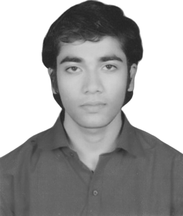

|
Ajay Thakur
|

|
-
Jan 2023-Present: Data Science Trainee
at AlmaBetter Edutech
Pvt. Ltd.
-
Jul 2016-May 2020: Graduated from Indian
Institute of Information Technology Kota
with the degree of Bachelor of
Technology in Electronics
and Communication Engineering
-
Feb 2019-Dec 2019: Completed Thesis on ‘‘Object
Identification RADAR System using Super Sonic Sensor for Embedded
Systems’’, under the guidance of Asst. Prof. Ashok Kherodia
-
Interests: Machine Learning, Deep Learning and
Data
Analytics
-
Technical Skills:
-
Programming Languages: Python, HTML, CSS, JavaScript
-
Softwares: Jupyter Notebook, Visual Studio Code, Windows, LaTeX, GitHub
-
Others: Collaboration, Communication, Adaptibility, Teamwork, Leadership
-
Contact and quick links: 2016kuec2026@iiitkota.ac.in, ajaythakur3369@gmail.com, GitHub,
LinkedIn
|
Experience
AlmaBetter Edutech Pvt. Ltd.
Data Science Trainee [Jan 2023-Present]
-
Analysed different EdStats Indicators of World Bank for better Global Education System by using
Pandas, NumPy,
Matplotlib and Seaborn
-
Currently working on Capstone Project (Regression), Yes Bank Stock Closing Price Prediction
by using Pandas, NumPy,
Matplotlib, Seaborn and Scikit
Projects
World Bank Global Education Analysis
Guide: Mr. Vikash Srivastava, Co-founder & CPTO at AlmaBetter Edutech Pvt. Ltd. | Capstone Project - EDA
at
AlmaBetter Edutech Pvt. Ltd. [Apr 2023-May 2023]
-
Analysed different Educational Statistics (EdStats) Indicators of World Bank on Global Education
System
-
Implemented by using Python libraries - Pandas, NumPy, Matplotlib and Seaborn
for data analysis, data
visualisation & statistical graphics
-
Purpose of the project is to analyse Student's Demographics, enhance Knowledge Retention &
Student's
Assessment. View Project, Report
& Slides,
along with
the Certificate, verified by AlmaBetter Edutech Pvt.
Ltd.
Object Identification RADAR System using Super Sonic Sensor for Embedded Systems
Guide: Asst. Prof. Ashok Kherodia | B. Tech. Thesis & RnD Project at Indian Institute of Information
Technology Kota [Feb 2019-Dec 2019]
-
Developed Radar (Object Detection System) for identification the Range, Altitude,
Direction & Speed of
both moving and fixed objects
-
Used existing techniques like Arduino IDE (Cross - Platform Application) & Processing
Software for
visual context with simple syntax and graphics programming model
-
Purpose of the project is to reduce Accidents, helping Blind Persons & use in
Surveillance
-
Working on the system, for making it more useful by 360° Rotation of Servo Motor which will
cover more
area in
detection with higher ranged ultrasonic sensor. View Report of
the Thesis
Education
Bachelor of Technology
Higher Secondary School Certificate Examination
High School Certificate Examination
-
Mar 2010: Secured 2nd Position in High School Certificate
Examination-2010 in the class, in
a batch of
109 students.
View Achievement
-
Jul 2009-Mar 2010: Completed High School Certificate Examination with
Science & Mathematics from M P Convent H.S.School,
Baadi,
Raisen (Board of Secondary Education, Madhya Pradesh,
Bhopal), 90.00%. View Marksheet
Achievements
-
May 14, 2023: Scored 85% in Capstone Project (EDA), World Bank Global Education
Analysis organised by
AlmaBetter Edutech Pvt. Ltd. View Achievement
-
Apr 14, 2023: Scored 404.22/600 marks in Programming Section in TCS NQT-April
2023 organised by
Tata Consultancy Services. View Achievement
-
Mar 18, 2023: Scored 97% in Overall Python Competency Test organised by
AlmaBetter Edutech Pvt. Ltd. It contains 75
number of questions with 1 hour time duration. View Achievement
-
Feb 25, 2018: Secured 2nd Position in Malaviya National Institute of
Technology Jaipur (MNIT)
Run-2018 among
500
participants, in the category of 14 km. View Achievement
-
Apr 2016: Secured All India Rank 16932 in JEE Main-2016 among 1.2 million
candidates
-
Mar 2010: Secured 2nd Position in High School Certificate
Examination-2010 in the class, in
a batch of
109 students.
View Achievement
|